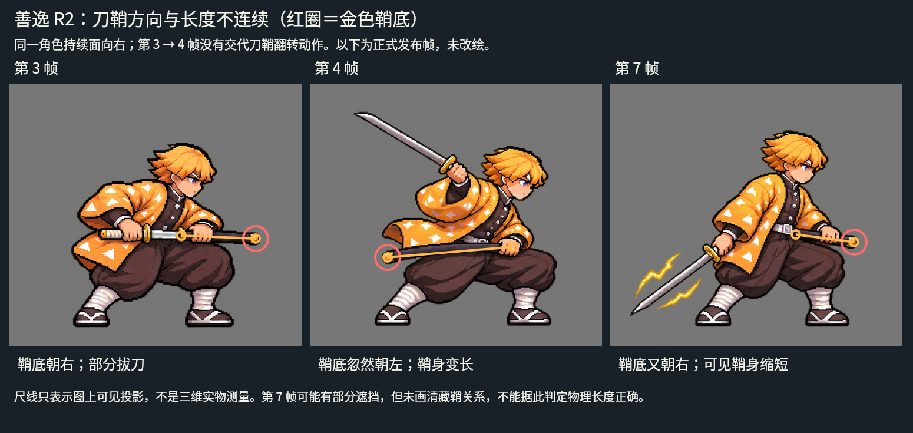
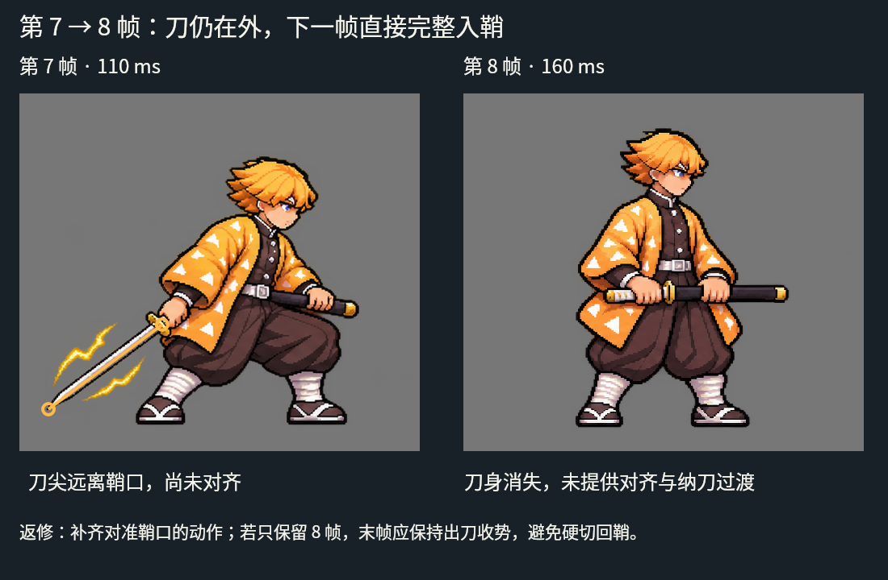
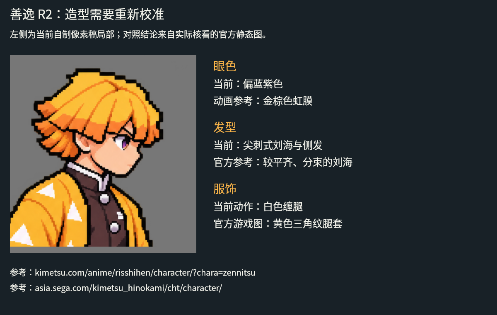
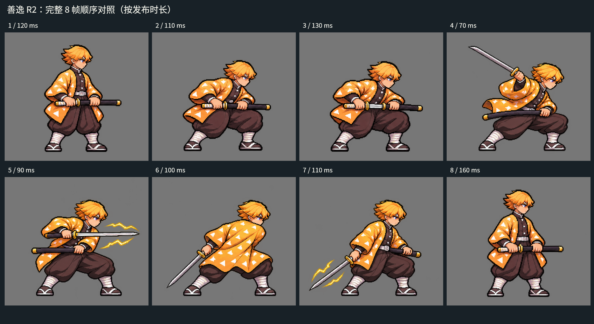

← 返回像素审核页独立复审结论 · 退回修改
善逸 R2：问题在整套动作关系
上次只确认了双手可见、实体刀刃变长，没有充分检查刀与鞘的空间关系和动作衔接。这版不应作为合格动作继续推进。
当前图片均为已经退修的 R2 原稿；本页展示问题证据，尚未制作新的修复稿。其余 8 项通过结果保留。
刀鞘朝向跳变
第 3→4 帧，金色鞘底从右边跳到左边，没有能解释这一变化的手臂或身体动作。
拔刀与收刀断裂
部分出鞘后直接变成举剑，低位持刀又直接恢复为入鞘姿态，缺少连续的运动路径。
角色造型不准确
当前蓝紫眼、尖刺状发型和白色缠腿，与已查看的官方参考存在明显差异。
逐帧证据
点击图片可放大。刀鞘可见长度受遮挡影响，不能直接当作实物长度；朝向跳变与无过渡入鞘则是直接可见的问题。

第 3→4 帧：刀鞘突然翻向。第 7 帧：长度与遮挡关系没有交代清楚。
第 7→8 帧：刀尖未对准鞘口，直接跳成入鞘状态。
造型复核：眼睛、发型与腿部服饰未保留官方角色特征。
当前 R2 的完整 8 帧：原图保持不变，供核对问题。查看完整独立审核与重画要求
# 善逸 R2 独立复核：退修，不能视为动作审核通过
审核对象：已发布 `pixel-r6-review-2` 的善逸设定图、雷光拔刀 8 帧；不是旧源图。父代理已重新比对线上与本地哈希一致，本审核实际查看了最终 PNG、灰底合成、逐帧顺序和两张已有官方静态参考。此次未取得新的原作视频，未把静态图当作原作八帧或时长依据。
**结论：两项都需要修改。上一轮把“双手可见、刀变长、透明边界正常”当成可交付条件，遗漏了更关键的道具方向、动作路径、纳刀衔接与角色身份错误。** 原先八项已通过素材不在退修范围；本报告未修改素材，也没有替用户签署任何通过意见。
## 确定问题与证据
### 1. 第 3 → 4 帧：刀鞘突然翻向（阻断）
[标注证据：刀鞘方向与长度](01-sheath-continuity.png)
第 1–3 帧的金色鞘底在画面右侧，鞘口在左，部分刀刃向左抽出。到第 4–5 帧，鞘底突然变成画面左侧，鞘口随握鞘手在右侧。角色仍朝右，躯干没有相应的转向或手臂带动刀鞘旋转的过渡。第 7–8 帧又恢复鞘底在右。
这不是“双手有没有画出来”的问题，而是同一件道具在相邻姿态中方向不连续。无法用第 6 帧的转背解释更早的第 3 → 4 帧。应固定左髋鞘口、左手与鞘底的关系，让拔刀手和鞘口反向分离，再连续进入出刀弧线；不能把两组不同握持方案直接拼接。
### 2. 第 7 → 8 帧：刀尚未对准鞘口，下一帧直接入鞘（阻断）
[标注证据：纳刀跳变](02-sheathing-jump.png)
第 7 帧刀刃仍完整伸向左下，刀尖远离右腰侧鞘口；第 8 帧已经完整入鞘并恢复站立。序列没有刀背贴口、刀尖对齐及送入的动作，第 7 帧维持 110 ms、第 8 帧维持 160 ms，使这个硬切无法被读成完整纳刀。
八张关键姿态可以省略中间绘制，但必须保留关键事件和空间关系。若只保留八帧，应让末帧保持出刀收势；如需纳刀，另补对口与推入的姿态，不要让刀身凭空消失。
### 3. 设定与官方角色识别点不符（重要）
[公开证据：当前自制稿局部及对照说明](03-identity-detail.png)
实际核看了动画官方静态图与 SEGA 官方角色图：当前设定与动作眼睛偏蓝紫，动画静态图为金棕色；当前刘海和侧发明显尖刺化，官方参考是较平齐的分束刘海及层叠短发。当前动作下腿主要为白色缠绕布，官方游戏图可见黄色三角纹腿套。这些点比“黄色羽织上有白三角”更能区分善逸和泛化的黄发剑士，需一并校准。
不能因静态参考是闭眼战斗姿势，就断言所有动作必须闭眼；闭眼战斗表情属于可讨论的演出选择，不列作硬错误。
## 需重画或进一步核实的问题
- **武器轮廓读成短直剑。** 第 4–7 帧的刀刃接近直锥形，刀尖和中线易读成对称双刃，缺少清楚的单刃刀背与刀刃弧度。应以更清晰的官方日轮刀参考建立同一把刀的设定，再把一致的刀型旋转到各姿态。此次两张官方静态图不足以逐项确认刀身纹理，不能声称已从它们核实所有雷纹细节。
- **刀鞘长度和隐藏关系不稳定。** 第 3 帧可见鞘约 126 px，第 4 帧约 214 px，第 7 帧约 100 px，均是图上投影近似值，不是实物测量。第 7 帧可能有部分鞘被身体遮挡，因此不硬判“物理上一定容不下刀”；但现有画面没有交代这段隐藏关系，且朝向同时改变，作为连贯动作不成立。
- **拔刀斩读感仍弱。** 第 3 帧向左抽刀，第 4 帧先举到肩上，第 5 帧又把刀平直对向右方，过渡中缺少连续的刀尖弧线与前冲驱动。第 5 帧特别容易读成刺或亮刀；第 6 帧确实画了转背随动，但不能靠单张转背弥补整个出刀链。需要先定攻击方向、鞘口和刀尖轨迹，再画身体，不应先拼八张好看的单姿态。
- **雷光没有帮助读出挥斩。** 第 5、7 帧主要是刀旁零散闪电，第 4、6 帧缺少清晰延续的轨迹。此次没有原作运动片段可逐帧比较，故这里只判“斩击路径的可读性不足”，不宣称某种闪电颜色或粒子形式必定违反原作。
## 逐帧结果
| 帧 | 实际观察 | 返修要求 |
|---|---|---|
| 1 | 两只手可见，横持整把在鞘武器；鞘底在右。站姿偏展示姿态。 | 先锁定与攻击方向一致的左髋鞘口和蓄力姿态。 |
| 2 | 有下蹲变化，双手仍可辨；鞘方向延续第 1 帧。 | 保留身体压缩，但明确髋肩预扭与蹬地脚。 |
| 3 | 部分刀刃露出，手未直接抓刀刃；鞘底在右。 | 出鞘方向必须能接入下一帧，禁止随后无过渡翻鞘。 |
| 4 | 真刀已画长，但鞘底跳到左；动作变成肩上举刀。 | 重画刀鞘与前后臂轨迹；从同一鞘口连续进入斩弧。 |
| 5 | 刀尖向右、前臂和刀较接近共线，易读成刺；鞘底仍在左。 | 增加可读的横切弧线与肩髋驱动，保留单刃刀型。 |
| 6 | 有转背和刀向左下的随动；另一手受身体遮挡。 | 不把遮挡误判缺手；按前一帧的握持和同一刀鞘继续补全遮挡关系。 |
| 7 | 回到前侧，鞘底又在右，可见鞘身缩短；刀仍在左下。 | 解释道具方向和隐藏关系；为保持出刀收势或纳刀对口作准备。 |
| 8 | 突然完整入鞘、站起，缺少第 7 帧到此的对口过程。 | 改成持刀收势，或增加真实的对口与纳刀帧。 |
[完整八帧顺序对照](04-all-frames.png)
## 下一轮必须先完成的制作约束
1. 先画一张武器与手部关系检查图：同一把单刃刀、匹配刀鞘、固定左右手、鞘口和鞘底，标出可见/遮挡段；先校准眼色、头发和腿套。
2. 不沿用“准备四帧一组、挥斩四帧另一组”的拼接方式。把八帧作为同一动作连贯重画；先通过灰模轮廓和刀尖轨迹，再上色与特效。
3. 审核顺序为：无特效动作 → 带特效动作 → 按真实时长播放。先确认拔刀、接触、随动和收势事件，不能用光效掩盖手或刀鞘错误。
4. 第一轮修正后由审核员重新核对每个相邻帧，而不是只检查首尾或比较总长度。仍由用户作最终美术决定。
## 参考范围和公开素材
- 动画角色页：https://kimetsu.com/anime/risshihen/character/?chara=zennitsu
- SEGA 官方游戏角色页：https://asia.sega.com/kimetsu_hinokami/cht/character/
- 本次实际看的是已落地官方静态图；未声称看过官方招式视频。
- `03-identity-reference.png` 为内部研究对照，含官方图片局部，不发布到公开页。公开页使用只含自制稿和文字的 `03-identity-detail.png`。